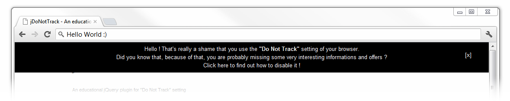

An educational jQuery plugin for "Do Not Track" setting

This plugin detects if a user is using the "Do Not Track" header and inform him about its dangers.
$(document).ready(function() {
$('body').doNotTrack();
});
options: {
zindex: '99999', // z-index parameter for the box
height: '70', // height of the alert box
id: 'doNotTrackAlert', // id of the alert box
idCloseButton: 'doNotTrackCloseButton', // id of the [x] link
animSpeed:1000, // Speed of open/close animation
autoHide: false, // Choose whether you want to auto-close the box or want the user to click on the [x] link
timeBeforeHide:10000, // If autoHide = true, time to wait before the box closes
}
jDoNotTrack has been tested to work completely in the following browsers (older versions may be supported, but haven't been tested):
Licensed under the MIT license.
jDoNotTrack was inspired by the fact that Microsoft decided to activate opt-out by default in their browser while, IMNSHO, it should reflect the direct choice of the user.
If you like my work, please follow me ... or donate (even 0.01€, that always nice !)
Design taken from @lipka because I really loved it (go check his Github page, he has some amazing stuff ;) ).